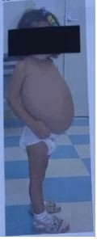
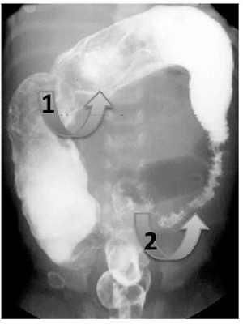
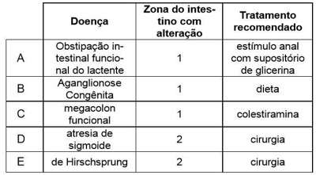

Paciente de 3 anos iniciou com constipação intestinal aos 2 anos de vida, durante inicio do desfralde. Atualmente apresenta uma evacuação a cada 3 dias, com fezes ressecadas e de grande diâmetro, com episódios frequentes de hematoquezia e escapes fecais. A vacinação está em dia e o teste do pezinho é normal. Na história pregressa, eliminou mecônio nas primeiras 24 horas de vida. Ao exame físico apresenta abdome normotenso, com massa papável em fossa ilíca esquerda com ruído hidroaéreo positivo. Ao toque retal, presença de grande quantidade de fezes endurecidas em reto. Fissura anal às 12h. Restante do exame físico sem alterações. Sobre o caso clínico apresentado, é CORRETO afirmar que:
Pré-escolar de 5 anos, masculino, foi atendida em Unidade Básica de Saúde, com quadro de fezes ressecadas, calibrosas, eliminadas com esforço, 1 a 2 evacuações por semana, há 1 ano e meio. Vem apresentando perdas fecais em pequena quantidade, involuntárias, nas vestes íntimas há 2 meses. Nega dor abdominal e tem medo de evacuar. Nos antecedentes gestacionais e pessoais patológicos, não há alterações. Nasceu em boas condições, e a eliminação de mecônio ocorreu em 18 horas de vida. Ao exame físico, está eutró ca, corada, ativa. Ausculta cardiopulmonar não apresenta alterações. Abdome está levemente distendido, com massa endurecidas em fossa ilíaca esquerda, depressível, indolor. Não há alterações em região glútea e perineal. O desenvolvimento neuropsicomotor está adequado. O quadro, apresentado pelo paciente, leva ao diagnóstico de
Revisar: possível letra faltando em enunciado
Uma paciente de 4 anos de idade foi levada pela mãe ao pronto atendimento e relatou que a lha refere intensa dor abdominal e está há sete dias sem evacuar. A lha começou a demonstrar di culdades para evacuar logo que iniciou a introdução alimentar e, desde então, apresenta fezes em “bolinhas”. Em relação à dieta, disse que a menina come frutas, porém em pouca variedade, gosta muito de banana e de maçã, não gosta de verduras e ingere pouca quantidade de água. Ao exame físico, verificaram-se FC = 100 bpm, FR = 22 irpm, SatO2 = 98% em AA, bem como abdome globoso com ruídos hidroaéreos positivos, dor difusa à palpação e, em quadrante inferior esquerdo, palpa-se massa (sugestivo de fezes). Considerando esse caso clínico e com base nos conhecimentos médicos correlatos, julgue o item a seguir. Diabetes
Uma paciente de 4 anos de idade foi levada pela mãe ao pronto atendimento e relatou que a lha refere intensa dor abdominal e está há sete dias sem evacuar. A lha começou a demonstrar di culdades para evacuar logo que iniciou a introdução alimentar e, desde então, apresenta fezes em “bolinhas”. Em relação à dieta, disse que a menina come frutas, porém em pouca variedade, gosta muito de banana e de maçã, não gosta de verduras e ingere pouca quantidade de água. Ao exame físico, verificaram-se FC = 100 bpm, FR = 22 irpm, SatO2 = 98% em AA, bem como abdome globoso com ruídos hidroaéreos positivos, dor difusa à palpação e, em quadrante inferior esquerdo, palpa-se massa (sugestivo de fezes). Considerando esse caso clínico e com base nos conhecimentos médicos correlatos, julgue o item a seguir. Na investigação de constipação, é importante solicitar exames como TSH e T4 livre, a fim de descartar hipotireoidismo, que tem, entre as suas manifestações, a constipação.
Uma paciente de 4 anos de idade foi levada pela mãe ao pronto atendimento e relatou que a lha refere intensa dor abdominal e está há sete dias sem evacuar. A lha começou a demonstrar di culdades para evacuar logo que iniciou a introdução alimentar e, desde então, apresenta fezes em “bolinhas”. Em relação à dieta, disse que a menina come frutas, porém em pouca variedade, gosta muito de banana e de maçã, não gosta de verduras e ingere pouca quantidade de água. Ao exame físico, verificaram-se FC = 100 bpm, FR = 22 irpm, SatO2 = 98% em AA, bem como abdome globoso com ruídos hidroaéreos positivos, dor difusa à palpação e, em quadrante inferior esquerdo, palpa-se massa (sugestivo de fezes). Considerando esse caso clínico e com base nos conhecimentos médicos correlatos, julgue o item a seguir. Sempre que uma criança relatar dor abdominal, é importante questionar a respeito dos hábitos intestinais, da consistência das fezes e do número de evacuações (dia/semana). A constipação funcional é um diagnóstico clínico feito de acordo com os critérios de Roma IV.
Menino, 1a, é trazido à Unidade Básica de Saúde para consulta de puericultura. Mãe refere que o lho recusa muito os alimentos e, quando come, aceita muito pouco. Nega vômitos, uso de medicamentos. Hábito intestinal: uma evacuação com fezes endurecidas a cada quatro dias. Nega controle es ncteriano. Exame físico: bo m estado geral, corado, IMC percentil 3 para a idade; abdome: globoso, flácido, indolor a palpação. O SINAL DE ALARME A SER CONSIDERADO NO DIAGNÓSTICO DIFERENCIAL DA CONSTIPAÇÃO INTESTINAL É
Menino, 8 anos de idade, com história de perder fezes nas roupas há 1 ano. Evacua 2 vezes na semana, fezes que entopem o vaso sanitário. Ao exame físico, apresenta-se eutró co, presença de massa abdominal palpável em hipogástrio e toque retal com grande quantidade de fezes endurecidas na ampola retal que se encontra ampla. A conduta inicial considerando o diagnóstico clínico é
Revisar: possível letra faltando em enunciado
Considerando as medidas terapêuticas da constipação intestinal funcional, assinale a alternativa INCORRETA.
Lactente de três meses é levado a atendimento médico devido a história de distensão abdominal e constipação. A mãe informa que a criança passa vários dias sem evacuar e que a eliminação fecal é difícil, por vezes, sendo necessária a utilização de estímulo retal com supositório de glicerina. O lactente foi desmamado com 12 dias de vida e, no momento, faz uso de “leite de vaca engrossado”. Exame físico: abdome distendido e doloroso à palpação; toque retal: ampola retal vazia. Após o toque, houve eliminação explosiva de fezes em grande quantidade. A hipótese diagnóstica que justi ca todos os achados é:
Revisar: possível letra faltando em enunciado
Paciente, sexo feminino, 5 anos de idade, apresenta história de constipação intestinal desde 2 anos de idade. No início evacuava a cada 3 dias, mas este intervalo foi aumentando, atualmente evacua a cada 15 dias, fezes calibrosas, dolorosas, às vezes com estrias de sangue. Nega febre e perda de peso. Apresenta escape fecal diário, há 6 meses. Ao exame físico: peso e estatura no percentil 25. Não apresenta distensão abdominal importante, mas palpa se uma massa em hipogástrio, móvel, chegando a 3 cm abaixo da cicatriz umbilical, não dolorosa. A inspeção do ânus, observou-se pequena ssura anal a 6 horas. Qual sua hipótese diagnóstica?
CMS, 5 anos, sexo feminino, apresenta fezes endurecidas com esforço a cada 5 dias e escape fecal diário. Família relata que, quando tem vontade de evacuar, se esconde atrás da cortina ou ca andando na ponta dos pés. Queixa-se de dor abdominal diária. A pediatra diagnosticou constipação crônica funcional e, para confirmar esse diagnóstico, é necessário
Revisar: possível letra faltando em enunciado
Em relação ao diagnóstico de constipação intestinal funcional em pacientes da faixa etária pediátrica, é correto afirmar:
Lactente de cinco meses, amamentado exclusivamente ao seio, apresenta-se com quadro de aumento de volume abdominal desde o nascimento, di culdade de ganho de peso e vômitos ocasionais. Mãe relata que apresentou eliminação de mecônio ao nascimento, mas vem apresentando desde então constipação crônica. Abdome distendido e timpânico, ânus com posicionamento normal. No toque retal ausência de fezes na ampola. Paciente é internado para investigação e apresenta na sequência quadro de diarreia, sensibilidade abdominal, sepse e sinais de obstrução intestinal na evolução. Considerando esta situação, analise as asserções abaixo e a relação proposta entre elas. I - Não se deve realizar procedimento cirúrgico no momento. PORQUE II - Ocorreu provavelmente uma proliferação bacteriana pela estase, levando a uma enterocolite ou megacólon tóxico. A respeito destas asserções, assinale a opção correta.
Menino de 5 anos, apresenta queixa de constipação intestinal há 2 anos. Mãe refere que mesmo sendo ressecado está sempre com a cueca manchada de fezes fétidas. Gosta muito de leite. Andou com 1 ano e 2 meses e entrou na escola com 3 anos. Ao exame físico, palpa-se uma massa dura de fezes no cólon. No exame retal encontra-se uma grande quantidade de fezes em um reto dilatado. Perante esta situação clínica assinale qual a melhor alternativa.
Sabendo-se que o diagnóstico de constipação intestinal é clínico, assinale um importante sinal de alerta para crianças que apresentam esse problema.
Pré-escolar com 4 anos, apresenta di culdade para evacuar desde os primeiros meses de vida, havendo piora progressiva do quadro há um ano quando passou a frequentar a creche. Atualmente só evacua com lavagem intestinal, que é realizada quando a criança ca 1 semana sem evacuar e tem muita dor abdominal, resultando em saída de fezes empedradas em grande quantidade. É uma criança retraída, não gosta de ir à escola, prefere car com a mãe. Já realizou diversos tratamentos, incluindo laxativos, aumento de bras na dieta, sem sucesso. Ao exame, apresenta discreta distensão abdominal, fezes endurecidas palpáveis em hipogástrio, peso e estatura no percentil 25. Com base nesse caso clínico, qual o melhor exame para firmar o diagnóstico?
Revisar: possível letra faltando em enunciado
Menina, 3 anos. Informante refere constipação intestinal desde o período neonatal evacuando apenas com medidas (estímulo com supositórios). Evoluiu, quando lactente, com episódios de impactação de fezes com necessidades de lavagem intestinal. Condição atual: evacua apenas com lavagem intestinal e apresenta escape fecal. Refere 4 internações com ""diarreia"", segundo mãe. A foto ilustra o paciente durante o momento de sua avaliação. Considerando o diagnóstico mais provável, qual a causa possível para estes episódios de ""diarreia""?

Lactente com 5 meses de idade, aleitamento arti cial desde os 4 meses, apresenta quadro de constipação intestinal que alterna com períodos de fezes explosivas e vem apresentando baixo ganho pondero-estatural; eliminação de mecônio no 3º dia de vida. Ao exame físico a criança apresenta distensão abdominal e ausência de fezes em ampola retal. Qual a hipótese diagnóstica para este quadro?
Menina de sete meses foi levada à consulta pediátrica com história de retenção fecal, evacuações dolorosas com eliminação de fezes endurecidas em cíbalos. A mãe a rma que desde o segundo mês de vida ela apresenta di culdade para evacuar. A rma ter iniciado alimentação complementar desde os 6 meses de vida de forma adequada. Refere que faz uso de laxativo oral há quatro semanas, diariamente, sem obter melhora do quadro. Qual o provável diagnóstico?
Um lactente de 3 meses em aleitamento materno apresenta di culdades para evacuar. São 15 minutos de tensão, esforço e muito choro. As evacuações costumam ser amolecidas. Assinale a alternativa que representa a conduta correta para esse caso:
Leiam os três casos clínicos abaixo: Caso 1: Lactente de 2 meses, com genitora referindo di culdade para evacuar, com frequência média a cada 3 a 5 dias. Está em aleitamento materno exclusivo sob livre demanda. Sem história de vômitos ou dor abdominal. Quando evacua, as fezes têm aspecto pastoso. Ganho pôndero-estatural adequado e, ao exame, não foi observada dor ou distensão abdominal. Toque retal com fezes de consistência normal na ampola. Caso 2: Criança de 1 ano, com queixa de distensão abdominal e di culdade para evacuar desde o nascimento. Genitora refere que é comum o menor apresentar quadro de inapetência e vômitos. Nos antecedentes, mãe refere atraso na eliminação do mecônio. Apresenta ganho pôndero-estatural inadequado para a faixa etária. Ao exame, observa-se abdome distendido com eliminação de fezes explosivas ao toque retal. Caso 3: Paciente de 5 anos com história de di culdade para evacuar há 6 meses. Genitora refere que o paciente evacua, em média, 1 vez por semana, apresenta comportamento retentivo, muitas vezes referindo ""medo de fazer cocô porque sente dor"". Quando evacua, as fezes são bastante volumosas e chegam a entupir o vaso sanitário. Apresenta ganho pôndero-estatural adequado.Ao exame, apresenta fezes endurecidas ao toque retal. Sobre esses casos, assinale a alternativa CORRETA.
Lactente de dez meses apresenta quadro intermitente de distensão abdominal e vômitos biliosos associados a retardo no crescimento. Na história neonatal, apresentou retardo na eliminação de mecônio, evoluindo com constipação crônica. O diagnóstico mais provável para esse caso é
Menino, 8 anos de idade, há dois anos apresenta evacuação a cada 4 a 5 dias, com esforço, dor e fezes que entopem o vaso. Prende as pernas quando tem vontade de evacuar. Há um ano tem perda diária de fezes amolecidas em pequena quantidade, que borram a veste íntima, uma a duas vezes ao dia. Nos últimos meses está muito agressivo e não quer ir para escola devido a bullying. Exame físico: bom estado geral, muito retraído e envergonhado durante toda a consulta, P50 nas curvas de peso e estatura. Abdome: sem distensão abdominal, palpação com massa em hipogástrio, toque retal com esfíncter normotônico e presença de fezes em grande quantidade na ampola retal que está muito ampla. Qual é a hipótese diagnóstica mais provável?
Lactente de 3 meses que, segundo a mãe, apresenta evacuações espontâneas com fezes explosivas, mas de consistência habitual para um lactente, a cada 15 dias. Está fazendo uso de supositório a cada 3 dias para que ocorra a evacuação. Há relato de distensão abdominal e cólicas frequentes. Ao exame físico, o abdome é tenso e difusamente doloroso. O lactente está em aleitamento materno exclusivo. Considerando os possíveis diagnósticos para o quadro, a conduta e diagnóstico MAIS ADEQUADOS são:
Menino, 5 anos de idade, com queixa de fezes endurecidas e, às vezes com o esforço, a criança chora de dor às evacuações. Tem aumentado o período entre uma evacuação e outra, podendo chegar a uma semana. No início apresentou filetes de sangue nas fezes, e atualmente tem apresentado escape fecal. O diagnóstico para o quadro acima é:
A mãe de um menino de 3 meses de idade refere que seu lho tem di culdade para evacuar desde o nascimento, tendo eliminados mecônio com 48 horas de vida. Atualmente, está em aleitamento arti cial e evacua a cada 3 ou 4 dias, com fezes em cíbalos e ressecadas. Ao exame, verifica-se baixo ganho ponderal, distensão abdominal, ânus sem alterações, e, ao toque retal, não havia fezes em ampola retal, com posterior eliminação de fezes explosivas. De acordo com a pricipal suspeita diagnóstica, a conduta deve ser
A principal causa de constipação intestinal em crianças na idade pré-escolar é
Lactente de três meses, sexo feminino, amamentado exclusivamente ao seio, apresenta di culdade progressiva para evacuar desde o nascimento e atualmente chega a demorar cinco/seis dias, sendo várias vezes somente após a realização de enemas. Apresenta baixo ganho ponderal, tem episódios de diarreia com fezes líquidas e explosivas e já foi medicado quatro vezes com antibióticos de amplo espectro por apresentar febre de natureza não conhecida. A principal hipótese diagnóstica e o exame complementar indicado para o caso são:
Lactente de 16 meses é levado à consulta pediátrica devido à di culdade para evacuar há 2 meses, com eliminação de fezes endurecidas a cada 3 ou 4 dias, com esforço e dor intensa. Às vezes apresenta eliminação de pequena quantidade de sangue durante a evacuação. Mãe percebeu que muitas vezes a fralda ca suja de fezes, mas não ocorre a evacuação completa. Recebeu leite materno por apenas 2 meses, atualmente mama 5 a 6 mamadeiras de leite de vaca integral com achocolatado. Segundo a mãe a criança tem di culdade em se alimentar, sendo sua dieta rica em carboidratos (gosta de pão e macarrão) e extremamente pobre em verduras e legumes. Não gosta de frutas e nem de água. Em relação a esse caso, analise as afirmativas a seguir: I- Trata-se de um caso de constipação intestinal provavelmente de origem orgânica, devendo ser investigado com exames complementares. II- Trata-se de caso de intolerância à lactose de manifestando com constipação, devendo-se prescrever fórmula infantil sem lactose. III- A abordagem terapêutica envolve aumentar a ingesta de fibras e líquidos. IV- Deve-se orientar redução da quantidade de leite ingerido e melhora da variedade alimentar, incluindo verduras, legumes e frutas na dieta. V- A terapia medicamentosa inclui a prescrição de óleo mineral. Estão CORRETAS as afirmativas:
Revisar: possível letra faltando em enunciado
A constipação intestinal é um sintoma gastrointestinal bastante frequente nas consultas pediátricas. Assinale a alternativa CORRETA com relação ao tema:
Você atende um lactente de 2 meses de idade, em aleitamento materno exclusivo. A mãe refere que a criança elimina fezes amolecidas em intervalos superiores a três dias, com regurgitações esporádicas e bom ganho de peso. Qual a hipótese diagnóstica?
Quanto à constipação intestinal em crianças, é INCORRETO afirmar que:
Constipação intestinal é definida por alteração na frequência, calibre e consistência das fezes e, também, o esforço ou dificuldade e a dor durante as evacuações. Assinale a alternativa correta da principal e mais frequente causa de obstipação em crianças:
Menina. 3 anos e 2 meses. com di culdade de evacuar desde lactente. Até os 2 anos evacuava a cada três dias, fezes em cibalos, com esforço, e às vezes necessidade do uso do supositório. Há dois meses teve piora do quadro, cando até sete dias sem evacuar. A última evacuação foi há três dias. em cíbalos. O desfralde foi com 2 anos e 6 meses. sem di culdade. mas agora não está querendo sentar no vaso e pede para colocar fralda ou faz no chão. Alimenta se bem, com menor ingestão de frutas e vegetais a partir de 2 anos e meio, aceita leite três vezes ao dia e ingestão de água é pouca. Ao exame físico: bom estado geral, ativo, corado, abdômen sem distensão, sem fezes palpáveis, ruídos hidroaéreos presentes. Ao exame retal não se verificam fissuras ou alterações. Qual deverá ser a conduta mais adequada neste caso?
Lactente de dez meses apresenta quadro intermitente de distensão abdominal e vômitos biliosos associados a retardo no crescimento. Na história neonatal, apresentou retardo na eliminação de mecônio, evoluindo com constipação crônica. O diagnóstico mais provável, somente para esse caso é:
Mãe traz a consulta, lactente de 3 meses de idade, pesando 5.400 g, sendo que desde a última consulta há 30 dias, aumentou 700 g de peso. Refere que a criança evacua fezes semi-pastosas amareladas, mas somente a cada 3 dias. Qual a conduta mais adequada?
Criança de quatro anos é trazida ao ambulatório com queixa de dor abdominal há três meses. O avô relata que a criança, em geral, evacua duas vezes na semana e em forma de cíbalos. Há uma semana, iniciou quadro de evacuação líquida, em pequenas quantidades, uma a duas vezes ao dia. Como o avô não cuida da criança desde o nascimento, não sabe relatar sobre dados da história neonatal. Ao exame físico, a criança se apresenta em bom estado geral, sem alterações à ausculta cardíaca e respiratória. O exame do abdome mostra dor à palpação profunda, sem sinal de irritação peritoneal, com massa palpável em fossa ilíaca esquerda, em formato cilíndrico. O exame que pode ajudar no diagnóstico diferencial entre constipação funcional e doença de Hirschprung para esse caso é:
Um menino de 23 dias de vida apresenta obstipação desde o nascimento. O Raio-X apresentado é resultado da investigação diagnóstica (as setas 1 e 2 indicam zonas do intestino). A doença; zona de intestino com alteração; tratamento recomendado são, respectivamente:


Escolar de 6 anos, masculino apresenta di culdade à eliminação das fezes há 6 meses. Refere que o inicio do quadro coincidiu com o nascimento da irmã. Refere eliminação de fezes volumosas, duras e secas e chega a apresentar raias de sangue nas fezes. Refere dor abdominal e apetite seletivo para leite e carboidratos. Há 1 mês iniciou quadro de perda de pequenas quantidades de fezes, na cueca, várias vezes ao dia, de odor fétido, que deixa a criança envergonhada. Com base na história clinica acima, assinale a alternativa correta.
A eliminação involuntária de fezes na criança sadia, quando ela não sente vontade de defecar, é definida como:
Responsável de paciente de sete anos relata que a criança evacua uma vez a cada nove dias e frequentemente suja a roupa íntima com fezes líquidas, há cerca de três anos. Exame físico revela impactação fecal. Considerando-se o diagnóstico de constipação intestinal funcional, a melhor conduta nesse momento é:
Escolar, seis anos, é trazida à consulta com história de diarreia. A mãe informa que suja as roupas diariamente. Exame físico: presença de fezes palpáveis em topogra a retal; toque retal com presença de fezes. Sobre esta condição clínica pode-se afirmar que:
Alex, 8 meses, vai ao ambulatório com queixa de apresentar fezes endurecidas, com esforço e desconforto evacuatório há dois meses. Nega qualquer outra alteração. Peso e altura entre o Z Score 0 e +1. Exame físico normal. Aleitamento humano exclusivo até 6 meses de vida. Atualmente em uso de leite humano e papas de legumes e carnes no almoço e jantar. Purê de frutas nos intervalos. Assinale a conduta CORRETA:
Qual o procedimento de escolha para o diagnóstico de megacólon agangliônico congênito (doença de Hirschsprung)? Respostas: 1 12 23 34 45